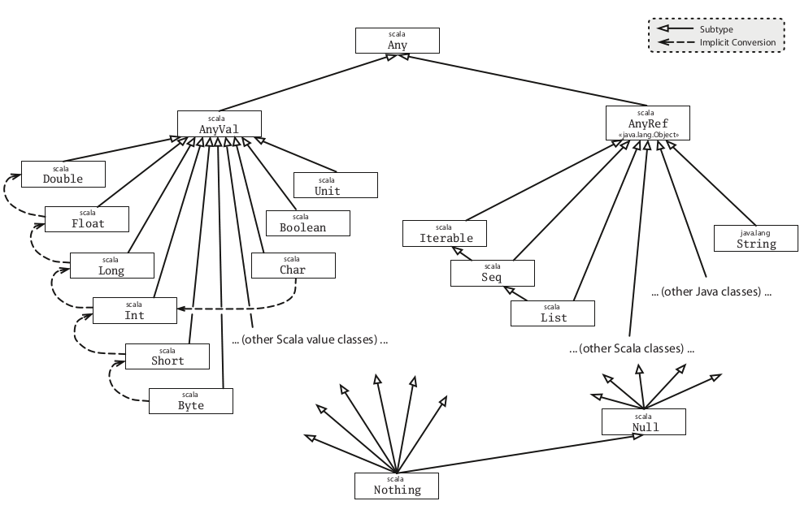

Scala
Evaluation rules
defdefines a methodvaldefines a fixed value, it is immmutable and eagerly initializedvardefines a variable reference, it is mutable and it should be avoidedlazyonly initialised when required and as late as possible (deferred evaluation), default is strict and is not recomputed like by-name parameters
def myFunction = 2 // evaluated when called
val myImmutableValue = 2 // evaluated immediately
lazy val iMLazy = 2 // evaluated once when needed
def sort(x: List[Double]) // call by value
def sort(x: => List[Double]) // call by name
// ds is a sequence of Double, containing a varying number of arguments
def varargsFunction(ds: Double*) = ???
- Call by-value: evaluates the function arguments before calling the function
- Call by-name: evaluates the function first, and then evaluates the arguments if need be (each time the parameter is referenced inside the function)
Type Parameters
Conceptually similar to C++ templates or Java generics. These can apply to classes, traits or functions.
class TypedClass[F](arg1: F) { ??? }
new TypedClass[Int](1)
new TypedClass(1) // the type is being inferred, i.e. determined based on the value arguments
def func[T <: TopLevel](arg: T): T = { ... } // T must derive from TopLevel or be TopLevel
def func[T >: Level1](arg: T): T = { ... } // T must be a supertype of Level1
def func[T >: Level1 <: Top Level](arg: T): T = { ... }
Variance
Quote
Variance being a tricky business, users usually get it wrong, and they come away thinking that wildcard and generics are overly complicated. With definition-side variance, you express your intent to the compiler, and the compiler will double check that the methods you want available will indeed be available.
Upper Bounds:
[S <: T] means: S is a subtype of T. Let's suppose that T is actually an Iterable, then S could one of Seq, List or Iterable.
Lower Bounds:
[S >: T] means: S is a supertype of T, or T is a subtype of S. So, if T is a List, S could be one of List, Seq, Iterable, or AnyRef.
Mixed Bounds:
[S >: T2 <: T1] means: s is any type on interval between T1 and T2. In this case we have basically a mix of the two cases above.
Let's consider NonEmpty <: IntSet, then can we infer that List[NonEmpty] <: List[IntSet]?
Intuitively, this makes sense: a list of non-empty sets is a special case of a list of arbitrary sets.
We call types for which this relationship holds covariant because their subtyping relationship varies with the type parameter. Thus Lists in scala are covariant.
Does covariance make sense for all types, not just for List? No. For instance, in Scala, arrays are not covariant.
When does it make sense to subtype one type with another?
It is safe to assume that a type
Tis a subtype of a typeU(T <: U) if you can substitute a value of typeTwherever a value of type U is required. This is called the Liskov Substitution Principle.

Say C[T] is a parameterized type, and A, B are types such that:
- Given
A <: B(A is a subtype of B) - If
C[A] <: C[B],Cis covariant - If
C[A] >: C[B],Cis contravariant - Neither
C[A]orC[B]is a subtype of the other, then C is invariant (or "nonvariant").
Scala lets you declare the variance of a type by annotating the type parameter:
class C[+A] { ... } // C is covariant
class C[-A] { ... } // C is contravariant
class C[A] { ... } // C is invariant
So, given that Any > AnyRef > IntSet > Empty and NonEmpty, if
type A = IntSet => NonEmpty
type B = NonEmpty => IntSet
A <: B, since B can return an Empty or NonEmpty, but A can return only NonEmpty.
For a function, if A2 <: A1 and B1 <: B2, then A1 => B1 <: A2 => B2. The consequence is that functions must be contravariant in their argument types and covariant in their result types.
/** The Scala Function1 S => T */
trait Function1[-S, +T] {
// S is contravariant, while T is covariant
def apply(x: S): T
}
This example shows that functions are contravariant in argument types and covariant in return types.
package io.github.sentenza.cars
class Car {}
class SportsCar extends Car {}
class Ferrari extends SportsCar {}
object morecovariance extends App {
// Test 1: Works as expected
def test1( arg: SportsCar => SportsCar ) = {
new SportsCar
}
def foo1(arg: Car): Ferrari = { new Ferrari }
def foo2(arg: SportsCar): Car = { new Ferrari }
def foo3(arg: Ferrari): Ferrari = { new Ferrari }
test1(foo1) // compiles
test1(foo2) // Fails due to wrong return type.
test1(foo3) // Fails due to wrong parameter type
}
Find out more about variance in Covariance And Contravariance in Scala
Type constructor and Variance
Abstract
To be added
pag. 392 of the White Scala Manual
Objects and Code organization
Quote
Scala has no globally visible methods: every method must be contained in an object or a class. However, using methods named apply inside global objects, you can support usage patterns that look like invocations of global methods.
From Programming in Scala - Second edition (by M. Odersky, L. Spoon, B. Venners)
As you can read above, I introduced Objects in terms of the functions they contain. It's very important to stress on this aspect, because Classes and Objects should be seen under a different light using Scala, especially if you come from an imperative OOP language, like Java or C++. They are just a way to organise your functions and at some point, using traits, objects (companion objects) and case classes (data constructors) you will eventually be able to build up your coding architecture based on types and composition of functions.
General object hierarchy

Note
All members of packages scala and java.lang as well as all members of the object scala.Predef are automatically imported.
scala.Nothingis a trait that is the bottom subtype of every subtype ofscala.Anyscala.Anybase type of all types. It has methodshashCodeandtoStringthat can be overridden
scala.AnyValis the base type of all primitive types:Double,Float, etc.scala.AnyRefbase type of all reference types. (alias ofjava.lang.Object, supertype ofjava.lang.String,scala.List, any user-defined class)scala.Nullis a subtype of anyscala.AnyRef, andscala.Nothingis a subtype of any other type without any instance.Nullis a trait and is the bottom type similiar toNothingbut only forAnyRefnotAnyValnullis the only instance of typeNull
Nilis an empty list that is defined as aList[Nothing]Noneis an empty option that is defined as aOption[Nothing]Unitis a subtype ofAnyVal, it's only value is()and it is not represented by any object in the underlying runtime system. A method with return typeUnitis analogous to a Java method which is declaredvoid
Factory Object
The following example has been taken from Programming in Scala:
abstract class Element {
def contents: Array[String]
def height: Int = contents.length
def width: Int = if (height == 0) 0 else contents(0).length
}
class ArrayElements(val contents: Array[String]) extends Element
// Invoking superclass constructor while extending the class itself
class LineElement(s: String) extends ArrayElement(Array(s)) {
override def width = s.length // Int is inferred
override def width = 1
}
class UniformElement(
ch: Char,
override val width: Int,
override val heigth: Int
) extends Element {
private val line = ch.toString * width
def contents = Array.fill(height)(line)
}
Now, what we can do is defining a Factory Object which contains methods that construct other objects, without exposing each class implementation. Basically, we can hide each class inside a Singleton Object, which will represent just a tag for the overloaded methods that will give us the ability to instantiate each subclass dinamically, and using polymorphism at the same time.
Important
Note that OOP is not a paradigm, but it's just a way to define our code structure in a logic manner that is similar to playing with LEGOs. OOP can be seen like an orthogonal dimension compared to functional, declarative or imperative paradigms.
// We start defining a Singleton Object
object Element {
// we can now hide classes as private fields of this object
private class ArrayElements(
val contents: Array[String]
) extends Element
private class LineElement(s: String) extends Element {
val contents = Array(s)
override def width = s.length
override def width = 1
}
private class UniformElement(
ch: Char,
override val width: Int,
override val heigth: Int
) extends Element {
private val line = ch.toString * width
def contents = Array.fill(height)(line)
}
// FACTORY
def elem(contents: Array[String]): Element =
new ArrayElement(contents)
def elem(chr: Char, width: Int, heigth: Int): Element =
new UniformElement(chr, width, height)
def elem(line: String): Elem =
new LineElement(line)
}
Objects creation are centralized and the details now are hidden.
Open/Closed Principle
This will eventually give an easy way to understand how to use these elements, and at the same time this small change will give the developer the Open/Closed Principle for free because less detail is exposed.
“Software entities … should be open for extension, but closed for modification.”
This provides more opportunities to change the implementation of the library without breaking client code. At the same time a class will have a single responsibility, and only one potential change in the software’s specification should be able to affect the specification of the class (Single Responsibility Principle). So, writing SOLID code pays off at the end.
Factory method
In Java you can create a private constructor by making it private. In Scala one can achieve the same behaviour prepending the private modifier to the default constructor.
class Point private(coordX: Float, coordY: Float) {
val x = coordX
val y = coordY
/** Public auxiliary constructor
* Setting the point at the origin of the Cartesian axes
* calling the default private constructor using the
*/
def this() = this(0.0, 0.0)
def getPoint = (x, y)
}
You cannot instantiate a new point using the default constructor:
val errorPoint = new Point(45.9, 21.08) // ERROR
val correctPoint = new Point() // (0.0, 0.0)
A possible solution to define a new Point is given by the usage of a companion object and a factory method that will give us a convenient way to define a new object, without actually call the new operator. To do so one can add the apply() method to the newly created object, which will have the same acess rights to the Point class if placed in the same file.
Therefore, the apply() method will be able to use the private construction of the Point class and then it will become a factory method:
class Point[T <: Double] private(coordX: T, coordY: T) { ... }
object Point {
def apply[T <: Double](x: T, y: T) = new Point[T](x, y)
}
Collections
Scala defines several collection classes:
Base Classes
Immutable Collections
List(linked list, provides fast sequential access)Stream(same as List, except that the tail is evaluated only on demand)Vector(array-like type, implemented as tree of blocks, provides fast random access)Range(ordered sequence of integers with equal spacing)String(Java type, implicitly converted to a character sequence, so you can treat every string like aSeq[Char])Map(collection that maps keys to values)Set(collection without duplicate elements)
Mutable Collections
Array(Scala arrays are native JVM arrays at runtime, therefore they are very performant)- Scala also has mutable maps and sets; these should only be used if there are performance issues with immutable types
Collections snippet
Snippet
val r: Range = 1 until 5 // 1, 2, 3, 4
val s: Range = 1 to 5 // 1, 2, 3, 4, 5
1 to 10 by 3 // 1, 4, 7, 10
6 to 1 by -2 // 6, 4, 2
// Operations on sequences
val xs = List(...)
xs.length // number of elements, complexity O(n)
xs.last // last element (exception if xs is empty), complexity O(n)
xs.init // all elements of xs but the last (exception if xs is empty), complexity O(n)
xs take n // first n elements of xs
xs drop n // the rest of the collection after taking n elements
xs(n) // the nth element of xs, complexity O(n)
xs ++ ys // concatenation, complexity O(n)
xs.reverse // reverse the order, complexity O(n)
xs updated(n, x) // same list than xs, except at index n where it contains x, complexity O(n)
xs indexOf x // the index of the first element equal to x (-1 otherwise)
xs contains x // same as xs indexOf x >= 0
xs filter p // returns a list of the elements that satisfy the predicate p
xs filterNot p // filter with negated p
xs partition p // same as (xs filter p, xs filterNot p)
xs takeWhile p // the longest prefix consisting of elements that satisfy p
xs dropWhile p // the remainder of the list after any leading element satisfying p have been removed
xs span p // same as (xs takeWhile p, xs dropWhile p)
List(x1, ..., xn) reduceLeft op // (...(x1 op x2) op x3) op ...) op xn
List(x1, ..., xn).foldLeft(z)(op) // (...( z op x1) op x2) op ...) op xn
List(x1, ..., xn) reduceRight op // x1 op (... (x{n-1} op xn) ...)
List(x1, ..., xn).foldRight(z)(op) // x1 op (... ( xn op z) ...)
xs exists p // true if there is at least one element for which predicate p is true
xs forall p // true if p(x) is true for all elements
xs zip ys // returns a list of pairs which groups elements with same index together
xs unzip // opposite of zip: returns a pair of two lists
xs.flatMap f // applies the function to all elements and concatenates the result
xs.sum // sum of elements of the numeric collection
xs.product // product of elements of the numeric collection
xs.max // maximum of collection
xs.min // minimum of collection
xs.flatten // flattens a collection of collection into a single-level collection
xs groupBy f // returns a map which points to a list of elements
xs distinct // sequence of distinct entries (removes duplicates)
x +: xs // creates a new collection with leading element x
xs :+ x // creates a new collection with trailing element x
// Operations on maps
val myMap = Map("I" -> 1, "V" -> 5, "X" -> 10) // create a map
myMap("I") // => 1
myMap("A") // => java.util.NoSuchElementException
myMap get "A" // => None
myMap get "I" // => Some(1)
myMap.updated("V", 15) // returns a new map where "V" maps to 15 (entry is updated)
// if the key ("V" here) does not exist, a new entry is added
// Operations on Streams
val xs = Stream(1, 2, 3)
val xs = Stream.cons(1, Stream.cons(2, Stream.cons(3, Stream.empty))) // same as above
(1 to 1000).toStream // => Stream(1, ?)
x #:: xs // Same as Stream.cons(x, xs)
// In the Stream's cons operator, the second parameter (the tail)
// is defined as a "call by name" parameter.
// Note that x::xs always produces a List
Pairs (similar for larger Tuples)
val pair = ("answer", 42) // type: (String, Int)
val x = ("x" -> 90) // type: (String, Int)
val y = ("y" -> -5) // type: (String, Int)
val z = ("z" -> 0) // type: (String, Int)
val (label, value) = pair // label = "answer", value = 42
pair._1 // "answer"
pair._2 // 42
Ordering
There is already a class in the standard library that represents orderings: scala.math.Ordering[T] which contains
comparison functions such as lt() and gt() for standard types. Types with a single natural ordering should inherit from
the trait scala.math.Ordered[T].
import math.Ordering
def msort[T](xs: List[T])(implicit ord: Ordering) = { ...}
msort(fruits)(Ordering.String)
msort(fruits) // the compiler figures out the right ordering
Typeclass
Quote
[...] Type class is a class (group) of types, which satisfy some contract defined in a trait with addition that such functionality (trait and implementation) can be added without any changes to the original code. One could say that the same could be achieved by extending a simple trait, but with type classes it is not necessary to predict such a need beforehand.
There is no special syntax in Scala to express a type class, but the same functionality can be achieved using constructs that already exist in the language. That’s what makes it a little difficult for newcomers to spot a type class in code. A typical implementation of a type class uses some syntactic sugar as well, which also doesn’t make it clear right away what we are dealing with.